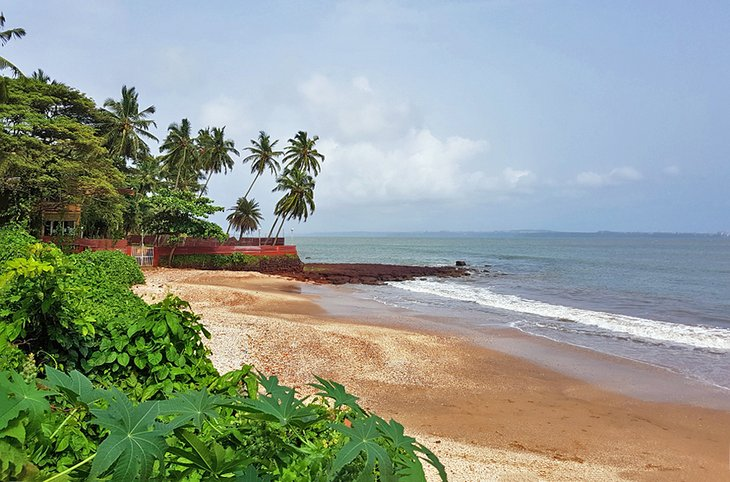
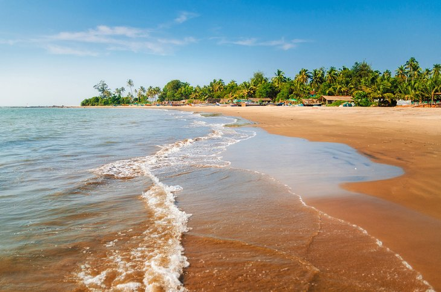
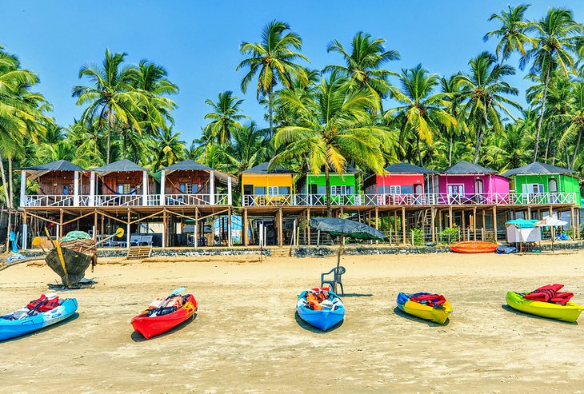

1. Palms of Beach

Goa might be among India's smallest states, but it has a bounty of beaches that beat any other coastal areas of the subcontinent. Think: Swaying palms, uninterrupted stretches of glittery gold sand, and smooth azure surf that promises to soothe the stresses of traveling in India. And at just an hour and 15 minutes away by air from Mumbai, Goa is an easy holiday destination to add to any trip to South India.
No matter what you're looking for, you can find coastal places to visit in Goa that suit your individual travel style. Benaulim Beach is a welcoming destination for families. Agonda Beach is the go-to place for wannabe surfers. Travelers who want to go off the beaten path will love discovering Butterfly Beach.
Read more
2. Dona Paula Beach

Dona Paula Beach is one of the best beaches in Goa for honeymoon tourists. Nicknamed "Lovers' Paradise," this coastal destination in the suburbs of Panaji even has its own love legend.
The tale is about Dona Paula, the daughter of a Portuguese viceroy, who threw herself into the Arabian Sea after her father forbade her from seeing a Goan fisherman who had stolen her heart. The viceroy was so saddened by the loss of his young daughter that he named this entire beautiful area after her, and treated it as a tribute to eternal romance.
It's easy for modern-day tourists to fall in love with this pretty beach. It's got calm waters and bronze sand shaded by palm trees, along with a relaxing vibe that begs you to stick around for sunset. It's also well served by a range of accommodations, including boutique hotels and luxury beach resorts, that will make you feel right at home.
Read More
3. Morjim Beach

This beach in north Goa offers a more wild, rustic feel than others in the state. It's a tranquil escape, lined with beach huts and sun beds, where you can spend hours on end. Morjim Beach has earned the nickname "Little Russia" for the large influx of Russians who stay here for weeks at a time. Its abundance of Russian restaurants can be a welcome change of pace from the rest of the food in Goa.
One of the top things to do in Morjim Beach is check out the wildlife. A variety of feathered species, including kingfishers, cuckoos, bay-backed shrikes, and sand plovers, create a bird-lovers' utopia. Olive ridley sea turtles can be found along the beach and offer unique photo opportunities. However, local laws prohibit tourists from disturbing the creatures, so be respectful and avoid getting too close. Look out to sea and you may see dolphins swimming along the horizon.
Read More
4. Palolem Beach

Accommodations in Goa don't get much quirkier than what you'll find at Palolem Beach. Every year, locals in the hospitality industry erect temporary coco huts in which travelers can spend the night. The rustic rooms make up for their lack of luxury with premier access to one of Goa's best beaches, dedicated lounge chairs right on the sand, and a one-of-a-kind experience that make for a lifetime's worth of memories.
Make the most of your time at stunning Palolem Beach by taking part in the many activities offered here. You can dance all night long to your choice of tunes at the beach's regular silent discos. Test your balance and find your zen in beach yoga classes. And sample traditional Goan flavors at one of the many well-reputed restaurants on Palolem Beach.
Read More
5. Vagator Beach

Vagator Beach is a lively area, but compared to the crowds of nearby Anjuna Beach, it's a serene getaway. Here, tourists will find a variety of offerings, including renowned restaurants that cater to every dietary need, shops filled to the brim with tempting souvenirs, and beach shacks with all the essentials you'll need for a day of sand and surf.
Walk to the end of Vagator Beach and you'll discover one of Goa's most picturesque attractions: the head of a Hindu deity carved into a boulder on the shore. Devotees often adorn the sculpture with marigold garlands and colored pigments.
A short walk inland brings you to Chapora Fort, a structure built by the Portuguese in the 17th century. Its hilltop location offers soothing seaside vistas.
Read More